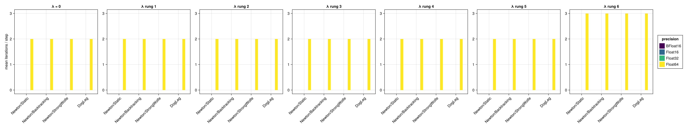
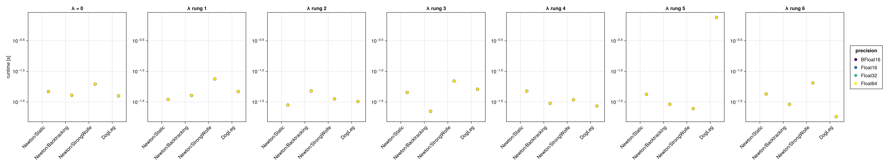
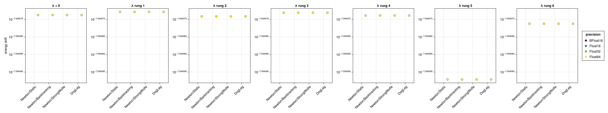

Pendulum (Nonlinear Integrator)
The mathematical pendulum benchmarked with the ShallowNet integrator (see Harmonic Oscillator (Nonlinear Integrator) for the network setup and the meaning of the regularization sweep). GeometricProblems.Pendulum provides no Lagrangian (lodeproblem) form, so its two-dimensional phase-space iodeproblem is used — the state is q = [angle, momentum], and the energy $H(\text{angle}, \text{momentum})$ is evaluated from both components. The pendulum is nonlinear, so it exercises the solves more than the harmonic oscillator. No closed-form solution is used; accuracy is assessed through the energy drift.
The figures panel by the regularization factor $\lambda$ — a rung of the $\sqrt{\varepsilon(T)}$ ladder, so one panel is a different shift at each precision; solver configurations are on the x-axis and precisions are distinguished by colour. Results are shown at $\Delta t = 0.1$ and repeated for $\Delta t = 1.0$ and $\Delta t = 10.0$ (ten steps each).
using SolverBenchmark
spec = pendulum_lode_spec(timespan = (0.0, 1.0), timestep = 0.1)
df = cached_sweep("nonlinear_pendulum_dt0.1") do
run_nonlinear_benchmark(spec; timing = :quick, max_iterations = 100,
verbose = false, quiet = true)
endConvergence
plot_convergence(df; panelcol = :regularization, title = "Pendulum (nonlinear)")
Nonlinear iterations
plot_iterations(df; panelcol = :regularization)
Run time
plot_runtime(df; panelcol = :regularization)
Energy drift
plot_energy_drift(df; panelcol = :regularization)
Discussion
- As for the harmonic oscillator, a nonzero regularization factor is required, and any rung will do. At
Float64, $\lambda = 0$ converges for no solver; every rung converges for all four, in $\approx 2.3$ iterations per step, conserving the energy to $8.05 \times 10^{-8}$ — to three significant figures the same drift at every rung, across a ladder spanning a factor of a thousand. - The pendulum's nonlinearity means the solve needs a few more iterations per step than the (linear) oscillator.
Float32converges from rung 2 up (23/28): all four solvers at rungs 2–6, but three of four at $\lambda = 0$ and none at rung 1. A rung that is worse than no regularization at all is the signature of the seed, not the solver — the OGA guess is rebuilt from the previous step's solution, so $\lambda$ perturbs the trajectory it is built from and can push a later step's Gram matrix into rank deficiency. See Harmonic Oscillator (Nonlinear Integrator) for that mechanism.- Both 16-bit formats fail at every rung (0/28 each, against 23/28 at
Float32and 24/28 atFloat64). The exception again comes from the OGA initial guess's Gram solve, not from the Newton Jacobian, soregularization_factorcannot reach it.
Results table
markdown_table(summary_table(df; panelcol = :regularization))| precision | solver_label | regularization | converged | iterations_mean | runtime_s | max_residual | at_tolerance | energy_drift |
|---|---|---|---|---|---|---|---|---|
| BFloat16 | Newton/Static | λ = 0 | ✗ | — | — | — | ✗ | — |
| BFloat16 | Newton/Static | λ rung 1 | ✗ | — | — | — | ✗ | — |
| BFloat16 | Newton/Static | λ rung 2 | ✗ | — | — | — | ✗ | — |
| BFloat16 | Newton/Static | λ rung 3 | ✗ | — | — | — | ✗ | — |
| BFloat16 | Newton/Static | λ rung 4 | ✗ | — | — | — | ✗ | — |
| BFloat16 | Newton/Static | λ rung 5 | ✗ | — | — | — | ✗ | — |
| BFloat16 | Newton/Static | λ rung 6 | ✗ | — | — | — | ✗ | — |
| BFloat16 | Newton/Backtracking | λ = 0 | ✗ | — | — | — | ✗ | — |
| BFloat16 | Newton/Backtracking | λ rung 1 | ✗ | — | — | — | ✗ | — |
| BFloat16 | Newton/Backtracking | λ rung 2 | ✗ | — | — | — | ✗ | — |
| BFloat16 | Newton/Backtracking | λ rung 3 | ✗ | — | — | — | ✗ | — |
| BFloat16 | Newton/Backtracking | λ rung 4 | ✗ | — | — | — | ✗ | — |
| BFloat16 | Newton/Backtracking | λ rung 5 | ✗ | — | — | — | ✗ | — |
| BFloat16 | Newton/Backtracking | λ rung 6 | ✗ | — | — | — | ✗ | — |
| BFloat16 | Newton/StrongWolfe | λ = 0 | ✗ | — | — | — | ✗ | — |
| BFloat16 | Newton/StrongWolfe | λ rung 1 | ✗ | — | — | — | ✗ | — |
| BFloat16 | Newton/StrongWolfe | λ rung 2 | ✗ | — | — | — | ✗ | — |
| BFloat16 | Newton/StrongWolfe | λ rung 3 | ✗ | — | — | — | ✗ | — |
| BFloat16 | Newton/StrongWolfe | λ rung 4 | ✗ | — | — | — | ✗ | — |
| BFloat16 | Newton/StrongWolfe | λ rung 5 | ✗ | — | — | — | ✗ | — |
| BFloat16 | Newton/StrongWolfe | λ rung 6 | ✗ | — | — | — | ✗ | — |
| BFloat16 | DogLeg | λ = 0 | ✗ | — | — | — | ✗ | — |
| BFloat16 | DogLeg | λ rung 1 | ✗ | — | — | — | ✗ | — |
| BFloat16 | DogLeg | λ rung 2 | ✗ | — | — | — | ✗ | — |
| BFloat16 | DogLeg | λ rung 3 | ✗ | — | — | — | ✗ | — |
| BFloat16 | DogLeg | λ rung 4 | ✗ | — | — | — | ✗ | — |
| BFloat16 | DogLeg | λ rung 5 | ✗ | — | — | — | ✗ | — |
| BFloat16 | DogLeg | λ rung 6 | ✗ | — | — | — | ✗ | — |
| Float16 | Newton/Static | λ = 0 | ✗ | — | — | — | ✗ | — |
| Float16 | Newton/Static | λ rung 1 | ✗ | — | — | — | ✗ | — |
| Float16 | Newton/Static | λ rung 2 | ✗ | — | — | — | ✗ | — |
| Float16 | Newton/Static | λ rung 3 | ✗ | — | — | — | ✗ | — |
| Float16 | Newton/Static | λ rung 4 | ✗ | — | — | — | ✗ | — |
| Float16 | Newton/Static | λ rung 5 | ✗ | — | — | — | ✗ | — |
| Float16 | Newton/Static | λ rung 6 | ✗ | — | — | — | ✗ | — |
| Float16 | Newton/Backtracking | λ = 0 | ✗ | — | — | — | ✗ | — |
| Float16 | Newton/Backtracking | λ rung 1 | ✗ | — | — | — | ✗ | — |
| Float16 | Newton/Backtracking | λ rung 2 | ✗ | — | — | — | ✗ | — |
| Float16 | Newton/Backtracking | λ rung 3 | ✗ | — | — | — | ✗ | — |
| Float16 | Newton/Backtracking | λ rung 4 | ✗ | — | — | — | ✗ | — |
| Float16 | Newton/Backtracking | λ rung 5 | ✗ | — | — | — | ✗ | — |
| Float16 | Newton/Backtracking | λ rung 6 | ✗ | — | — | — | ✗ | — |
| Float16 | Newton/StrongWolfe | λ = 0 | ✗ | — | — | — | ✗ | — |
| Float16 | Newton/StrongWolfe | λ rung 1 | ✗ | — | — | — | ✗ | — |
| Float16 | Newton/StrongWolfe | λ rung 2 | ✗ | — | — | — | ✗ | — |
| Float16 | Newton/StrongWolfe | λ rung 3 | ✗ | — | — | — | ✗ | — |
| Float16 | Newton/StrongWolfe | λ rung 4 | ✗ | — | — | — | ✗ | — |
| Float16 | Newton/StrongWolfe | λ rung 5 | ✗ | — | — | — | ✗ | — |
| Float16 | Newton/StrongWolfe | λ rung 6 | ✗ | — | — | — | ✗ | — |
| Float16 | DogLeg | λ = 0 | ✗ | — | — | — | ✗ | — |
| Float16 | DogLeg | λ rung 1 | ✗ | — | — | — | ✗ | — |
| Float16 | DogLeg | λ rung 2 | ✗ | — | — | — | ✗ | — |
| Float16 | DogLeg | λ rung 3 | ✗ | — | — | — | ✗ | — |
| Float16 | DogLeg | λ rung 4 | ✗ | — | — | — | ✗ | — |
| Float16 | DogLeg | λ rung 5 | ✗ | — | — | — | ✗ | — |
| Float16 | DogLeg | λ rung 6 | ✗ | — | — | — | ✗ | — |
| Float32 | Newton/Static | λ = 0 | ✗ | — | — | — | ✗ | — |
| Float32 | Newton/Static | λ rung 1 | ✗ | — | — | — | ✗ | — |
| Float32 | Newton/Static | λ rung 2 | ✗ | — | — | — | ✗ | — |
| Float32 | Newton/Static | λ rung 3 | ✗ | — | — | — | ✗ | — |
| Float32 | Newton/Static | λ rung 4 | ✗ | — | — | — | ✗ | — |
| Float32 | Newton/Static | λ rung 5 | ✗ | — | — | — | ✗ | — |
| Float32 | Newton/Static | λ rung 6 | ✗ | — | — | — | ✗ | — |
| Float32 | Newton/Backtracking | λ = 0 | ✗ | — | — | — | ✗ | — |
| Float32 | Newton/Backtracking | λ rung 1 | ✗ | — | — | — | ✗ | — |
| Float32 | Newton/Backtracking | λ rung 2 | ✗ | — | — | — | ✗ | — |
| Float32 | Newton/Backtracking | λ rung 3 | ✗ | — | — | — | ✗ | — |
| Float32 | Newton/Backtracking | λ rung 4 | ✗ | — | — | — | ✗ | — |
| Float32 | Newton/Backtracking | λ rung 5 | ✗ | — | — | — | ✗ | — |
| Float32 | Newton/Backtracking | λ rung 6 | ✗ | — | — | — | ✗ | — |
| Float32 | Newton/StrongWolfe | λ = 0 | ✗ | — | — | — | ✗ | — |
| Float32 | Newton/StrongWolfe | λ rung 1 | ✗ | — | — | — | ✗ | — |
| Float32 | Newton/StrongWolfe | λ rung 2 | ✗ | — | — | — | ✗ | — |
| Float32 | Newton/StrongWolfe | λ rung 3 | ✗ | — | — | — | ✗ | — |
| Float32 | Newton/StrongWolfe | λ rung 4 | ✗ | — | — | — | ✗ | — |
| Float32 | Newton/StrongWolfe | λ rung 5 | ✗ | — | — | — | ✗ | — |
| Float32 | Newton/StrongWolfe | λ rung 6 | ✗ | — | — | — | ✗ | — |
| Float32 | DogLeg | λ = 0 | ✗ | — | — | — | ✗ | — |
| Float32 | DogLeg | λ rung 1 | ✗ | — | — | — | ✗ | — |
| Float32 | DogLeg | λ rung 2 | ✗ | — | — | — | ✗ | — |
| Float32 | DogLeg | λ rung 3 | ✗ | — | — | — | ✗ | — |
| Float32 | DogLeg | λ rung 4 | ✗ | — | — | — | ✗ | — |
| Float32 | DogLeg | λ rung 5 | ✗ | — | — | — | ✗ | — |
| Float32 | DogLeg | λ rung 6 | ✗ | — | — | — | ✗ | — |
| Float64 | Newton/Static | λ = 0 | ✓ | 2 | 0.0467 | 4.46e-14 | ✓ | 8.05e-08 |
| Float64 | Newton/Static | λ rung 1 | ✓ | 2 | 0.0348 | 3.29e-14 | ✓ | 8.05e-08 |
| Float64 | Newton/Static | λ rung 2 | ✓ | 2 | 0.0282 | 2.83e-14 | ✓ | 8.05e-08 |
| Float64 | Newton/Static | λ rung 3 | ✓ | 2 | 0.0453 | 4e-14 | ✓ | 8.05e-08 |
| Float64 | Newton/Static | λ rung 4 | ✓ | 2 | 0.0475 | 3.01e-14 | ✓ | 8.05e-08 |
| Float64 | Newton/Static | λ rung 5 | ✓ | 2 | 0.0421 | 3.61e-14 | ✓ | 8.05e-08 |
| Float64 | Newton/Static | λ rung 6 | ✓ | 3 | 0.0426 | 2.19e-14 | ✓ | 8.05e-08 |
| Float64 | Newton/Backtracking | λ = 0 | ✓ | 2 | 0.0407 | 4.46e-14 | ✓ | 8.05e-08 |
| Float64 | Newton/Backtracking | λ rung 1 | ✓ | 2 | 0.0403 | 3.29e-14 | ✓ | 8.05e-08 |
| Float64 | Newton/Backtracking | λ rung 2 | ✓ | 2 | 0.0478 | 2.83e-14 | ✓ | 8.05e-08 |
| Float64 | Newton/Backtracking | λ rung 3 | ✓ | 2 | 0.0222 | 4e-14 | ✓ | 8.05e-08 |
| Float64 | Newton/Backtracking | λ rung 4 | ✓ | 2 | 0.03 | 3.01e-14 | ✓ | 8.05e-08 |
| Float64 | Newton/Backtracking | λ rung 5 | ✓ | 2 | 0.029 | 3.61e-14 | ✓ | 8.05e-08 |
| Float64 | Newton/Backtracking | λ rung 6 | ✓ | 3 | 0.0289 | 2.19e-14 | ✓ | 8.05e-08 |
| Float64 | Newton/StrongWolfe | λ = 0 | ✓ | 2 | 0.0618 | 4.46e-14 | ✓ | 8.05e-08 |
| Float64 | Newton/StrongWolfe | λ rung 1 | ✓ | 2 | 0.0751 | 3.29e-14 | ✓ | 8.05e-08 |
| Float64 | Newton/StrongWolfe | λ rung 2 | ✓ | 2 | 0.0355 | 2.83e-14 | ✓ | 8.05e-08 |
| Float64 | Newton/StrongWolfe | λ rung 3 | ✓ | 2 | 0.0694 | 4e-14 | ✓ | 8.05e-08 |
| Float64 | Newton/StrongWolfe | λ rung 4 | ✓ | 2 | 0.0344 | 3.01e-14 | ✓ | 8.05e-08 |
| Float64 | Newton/StrongWolfe | λ rung 5 | ✓ | 2 | 0.0246 | 3.61e-14 | ✓ | 8.05e-08 |
| Float64 | Newton/StrongWolfe | λ rung 6 | ✓ | 3 | 0.0648 | 2.19e-14 | ✓ | 8.05e-08 |
| Float64 | DogLeg | λ = 0 | ✓ | 2 | 0.0398 | 4.46e-14 | ✓ | 8.05e-08 |
| Float64 | DogLeg | λ rung 1 | ✓ | 2 | 0.0468 | 3.29e-14 | ✓ | 8.05e-08 |
| Float64 | DogLeg | λ rung 2 | ✓ | 2 | 0.0322 | 2.83e-14 | ✓ | 8.05e-08 |
| Float64 | DogLeg | λ rung 3 | ✓ | 2 | 0.051 | 4e-14 | ✓ | 8.05e-08 |
| Float64 | DogLeg | λ rung 4 | ✓ | 2 | 0.0271 | 3.01e-14 | ✓ | 8.05e-08 |
| Float64 | DogLeg | λ rung 5 | ✓ | 2 | 0.762 | 3.61e-14 | ✓ | 8.05e-08 |
| Float64 | DogLeg | λ rung 6 | ✓ | 3 | 0.0181 | 2.19e-14 | ✓ | 8.05e-08 |
Coarse time step (Δt = 1.0)
spec1 = pendulum_lode_spec(timespan = (0.0, 10.0), timestep = 1.0)
df1 = cached_sweep("nonlinear_pendulum_dt1.0") do
run_nonlinear_benchmark(spec1; timing = :quick, max_iterations = 100,
verbose = false, quiet = true)
endplot_convergence(df1; panelcol = :regularization, title = "Pendulum (nonlinear, Δt = 1.0)")
plot_energy_drift(df1; panelcol = :regularization)
markdown_table(summary_table(df1; panelcol = :regularization))| precision | solver_label | regularization | converged | iterations_mean | runtime_s | max_residual |
|---|---|---|---|---|---|---|
| BFloat16 | Newton/Static | λ = 0 | ✗ | — | — | — |
| BFloat16 | Newton/Static | λ rung 1 | ✗ | — | — | — |
| BFloat16 | Newton/Static | λ rung 2 | ✗ | — | — | — |
| BFloat16 | Newton/Static | λ rung 3 | ✗ | — | — | — |
| BFloat16 | Newton/Static | λ rung 4 | ✗ | — | — | — |
| BFloat16 | Newton/Static | λ rung 5 | ✗ | — | — | — |
| BFloat16 | Newton/Static | λ rung 6 | ✗ | — | — | — |
| BFloat16 | Newton/Backtracking | λ = 0 | ✗ | — | — | — |
| BFloat16 | Newton/Backtracking | λ rung 1 | ✗ | — | — | — |
| BFloat16 | Newton/Backtracking | λ rung 2 | ✗ | — | — | — |
| BFloat16 | Newton/Backtracking | λ rung 3 | ✗ | — | — | — |
| BFloat16 | Newton/Backtracking | λ rung 4 | ✗ | — | — | — |
| BFloat16 | Newton/Backtracking | λ rung 5 | ✗ | — | — | — |
| BFloat16 | Newton/Backtracking | λ rung 6 | ✗ | — | — | — |
| BFloat16 | Newton/StrongWolfe | λ = 0 | ✗ | — | — | — |
| BFloat16 | Newton/StrongWolfe | λ rung 1 | ✗ | — | — | — |
| BFloat16 | Newton/StrongWolfe | λ rung 2 | ✗ | — | — | — |
| BFloat16 | Newton/StrongWolfe | λ rung 3 | ✗ | — | — | — |
| BFloat16 | Newton/StrongWolfe | λ rung 4 | ✗ | — | — | — |
| BFloat16 | Newton/StrongWolfe | λ rung 5 | ✗ | — | — | — |
| BFloat16 | Newton/StrongWolfe | λ rung 6 | ✗ | — | — | — |
| BFloat16 | DogLeg | λ = 0 | ✗ | — | — | — |
| BFloat16 | DogLeg | λ rung 1 | ✗ | — | — | — |
| BFloat16 | DogLeg | λ rung 2 | ✗ | — | — | — |
| BFloat16 | DogLeg | λ rung 3 | ✗ | — | — | — |
| BFloat16 | DogLeg | λ rung 4 | ✗ | — | — | — |
| BFloat16 | DogLeg | λ rung 5 | ✗ | — | — | — |
| BFloat16 | DogLeg | λ rung 6 | ✗ | — | — | — |
| Float16 | Newton/Static | λ = 0 | ✗ | — | — | — |
| Float16 | Newton/Static | λ rung 1 | ✗ | — | — | — |
| Float16 | Newton/Static | λ rung 2 | ✗ | — | — | — |
| Float16 | Newton/Static | λ rung 3 | ✗ | — | — | — |
| Float16 | Newton/Static | λ rung 4 | ✗ | — | — | — |
| Float16 | Newton/Static | λ rung 5 | ✗ | — | — | — |
| Float16 | Newton/Static | λ rung 6 | ✗ | — | — | — |
| Float16 | Newton/Backtracking | λ = 0 | ✗ | — | — | — |
| Float16 | Newton/Backtracking | λ rung 1 | ✗ | — | — | — |
| Float16 | Newton/Backtracking | λ rung 2 | ✗ | — | — | — |
| Float16 | Newton/Backtracking | λ rung 3 | ✗ | — | — | — |
| Float16 | Newton/Backtracking | λ rung 4 | ✗ | — | — | — |
| Float16 | Newton/Backtracking | λ rung 5 | ✗ | — | — | — |
| Float16 | Newton/Backtracking | λ rung 6 | ✗ | — | — | — |
| Float16 | Newton/StrongWolfe | λ = 0 | ✗ | — | — | — |
| Float16 | Newton/StrongWolfe | λ rung 1 | ✗ | — | — | — |
| Float16 | Newton/StrongWolfe | λ rung 2 | ✗ | — | — | — |
| Float16 | Newton/StrongWolfe | λ rung 3 | ✗ | — | — | — |
| Float16 | Newton/StrongWolfe | λ rung 4 | ✗ | — | — | — |
| Float16 | Newton/StrongWolfe | λ rung 5 | ✗ | — | — | — |
| Float16 | Newton/StrongWolfe | λ rung 6 | ✗ | — | — | — |
| Float16 | DogLeg | λ = 0 | ✗ | — | — | — |
| Float16 | DogLeg | λ rung 1 | ✗ | — | — | — |
| Float16 | DogLeg | λ rung 2 | ✗ | — | — | — |
| Float16 | DogLeg | λ rung 3 | ✗ | — | — | — |
| Float16 | DogLeg | λ rung 4 | ✗ | — | — | — |
| Float16 | DogLeg | λ rung 5 | ✗ | — | — | — |
| Float16 | DogLeg | λ rung 6 | ✗ | — | — | — |
| Float32 | Newton/Static | λ = 0 | ✗ | — | — | — |
| Float32 | Newton/Static | λ rung 1 | ✗ | — | — | — |
| Float32 | Newton/Static | λ rung 2 | ✗ | — | — | — |
| Float32 | Newton/Static | λ rung 3 | ✗ | — | — | — |
| Float32 | Newton/Static | λ rung 4 | ✗ | — | — | — |
| Float32 | Newton/Static | λ rung 5 | ✗ | — | — | — |
| Float32 | Newton/Static | λ rung 6 | ✗ | — | — | — |
| Float32 | Newton/Backtracking | λ = 0 | ✗ | — | — | — |
| Float32 | Newton/Backtracking | λ rung 1 | ✗ | — | — | — |
| Float32 | Newton/Backtracking | λ rung 2 | ✗ | — | — | — |
| Float32 | Newton/Backtracking | λ rung 3 | ✗ | — | — | — |
| Float32 | Newton/Backtracking | λ rung 4 | ✗ | — | — | — |
| Float32 | Newton/Backtracking | λ rung 5 | ✗ | — | — | — |
| Float32 | Newton/Backtracking | λ rung 6 | ✗ | — | — | — |
| Float32 | Newton/StrongWolfe | λ = 0 | ✗ | — | — | — |
| Float32 | Newton/StrongWolfe | λ rung 1 | ✗ | — | — | — |
| Float32 | Newton/StrongWolfe | λ rung 2 | ✗ | — | — | — |
| Float32 | Newton/StrongWolfe | λ rung 3 | ✗ | — | — | — |
| Float32 | Newton/StrongWolfe | λ rung 4 | ✗ | — | — | — |
| Float32 | Newton/StrongWolfe | λ rung 5 | ✗ | — | — | — |
| Float32 | Newton/StrongWolfe | λ rung 6 | ✗ | — | — | — |
| Float32 | DogLeg | λ = 0 | ✗ | — | — | — |
| Float32 | DogLeg | λ rung 1 | ✗ | — | — | — |
| Float32 | DogLeg | λ rung 2 | ✗ | — | — | — |
| Float32 | DogLeg | λ rung 3 | ✗ | — | — | — |
| Float32 | DogLeg | λ rung 4 | ✗ | — | — | — |
| Float32 | DogLeg | λ rung 5 | ✗ | — | — | — |
| Float32 | DogLeg | λ rung 6 | ✗ | — | — | — |
| Float64 | Newton/Static | λ = 0 | ✗ | 34.6 | 0.169 | 3.2e+07 |
| Float64 | Newton/Static | λ rung 1 | ✗ | 42.9 | 0.264 | 1.03e+12 |
| Float64 | Newton/Static | λ rung 2 | ✗ | 19.2 | 0.0692 | 9.43e+17 |
| Float64 | Newton/Static | λ rung 3 | ✗ | 33.1 | 0.128 | 3.55e+10 |
| Float64 | Newton/Static | λ rung 4 | ✗ | 22.7 | 0.21 | 1.2e+10 |
| Float64 | Newton/Static | λ rung 5 | ✗ | 25.8 | 0.118 | 1.58e+12 |
| Float64 | Newton/Static | λ rung 6 | ✗ | 22.7 | 0.108 | 1.28e-06 |
| Float64 | Newton/Backtracking | λ = 0 | ✗ | 37.2 | 0.241 | 0.46 |
| Float64 | Newton/Backtracking | λ rung 1 | ✗ | 40.4 | 0.226 | 0.0547 |
| Float64 | Newton/Backtracking | λ rung 2 | ✗ | 33.8 | 0.177 | 0.00917 |
| Float64 | Newton/Backtracking | λ rung 3 | ✗ | 42.7 | 0.227 | 0.064 |
| Float64 | Newton/Backtracking | λ rung 4 | ✗ | 39.8 | 0.242 | 0.203 |
| Float64 | Newton/Backtracking | λ rung 5 | ✗ | 46.8 | 0.261 | 0.293 |
| Float64 | Newton/Backtracking | λ rung 6 | ✗ | 34.6 | 0.201 | 0.256 |
| Float64 | Newton/StrongWolfe | λ = 0 | ✗ | 35.7 | 1.88 | 0.18 |
| Float64 | Newton/StrongWolfe | λ rung 1 | ✗ | 32.9 | 0.382 | 0.473 |
| Float64 | Newton/StrongWolfe | λ rung 2 | ✗ | 34.9 | 0.318 | 0.0938 |
| Float64 | Newton/StrongWolfe | λ rung 3 | ✗ | 36.6 | 0.349 | 0.0878 |
| Float64 | Newton/StrongWolfe | λ rung 4 | ✗ | 36.9 | 0.521 | 0.148 |
| Float64 | Newton/StrongWolfe | λ rung 5 | ✗ | 32.2 | 0.367 | 0.282 |
| Float64 | Newton/StrongWolfe | λ rung 6 | ✗ | 30.7 | 0.23 | 0.106 |
| Float64 | DogLeg | λ = 0 | ✗ | 33.3 | 0.188 | 0.00343 |
| Float64 | DogLeg | λ rung 1 | ✗ | 34.6 | 1.13 | 0.00482 |
| Float64 | DogLeg | λ rung 2 | ✗ | 23.9 | 0.0941 | 0.000814 |
| Float64 | DogLeg | λ rung 3 | ✗ | 30.7 | 0.0971 | 0.00348 |
| Float64 | DogLeg | λ rung 4 | ✗ | 40.2 | 0.117 | 0.00598 |
| Float64 | DogLeg | λ rung 5 | ✗ | 36.4 | 0.171 | 0.00248 |
| Float64 | DogLeg | λ rung 6 | ✗ | 43.1 | 0.185 | 0.011 |
Large time step (Δt = 10.0)
spec10 = pendulum_lode_spec(timespan = (0.0, 100.0), timestep = 10.0)
df10 = cached_sweep("nonlinear_pendulum_dt10.0") do
run_nonlinear_benchmark(spec10; timing = :quick, max_iterations = 100,
verbose = false, quiet = true)
endplot_convergence(df10; panelcol = :regularization, title = "Pendulum (nonlinear, Δt = 10.0)")
markdown_table(summary_table(df10; panelcol = :regularization))| precision | solver_label | regularization | converged | iterations_mean | runtime_s | max_residual |
|---|---|---|---|---|---|---|
| BFloat16 | Newton/Static | λ = 0 | ✗ | — | — | — |
| BFloat16 | Newton/Static | λ rung 1 | ✗ | — | — | — |
| BFloat16 | Newton/Static | λ rung 2 | ✗ | — | — | — |
| BFloat16 | Newton/Static | λ rung 3 | ✗ | — | — | — |
| BFloat16 | Newton/Static | λ rung 4 | ✗ | — | — | — |
| BFloat16 | Newton/Static | λ rung 5 | ✗ | — | — | — |
| BFloat16 | Newton/Static | λ rung 6 | ✗ | — | — | — |
| BFloat16 | Newton/Backtracking | λ = 0 | ✗ | — | — | — |
| BFloat16 | Newton/Backtracking | λ rung 1 | ✗ | — | — | — |
| BFloat16 | Newton/Backtracking | λ rung 2 | ✗ | — | — | — |
| BFloat16 | Newton/Backtracking | λ rung 3 | ✗ | — | — | — |
| BFloat16 | Newton/Backtracking | λ rung 4 | ✗ | — | — | — |
| BFloat16 | Newton/Backtracking | λ rung 5 | ✗ | — | — | — |
| BFloat16 | Newton/Backtracking | λ rung 6 | ✗ | — | — | — |
| BFloat16 | Newton/StrongWolfe | λ = 0 | ✗ | — | — | — |
| BFloat16 | Newton/StrongWolfe | λ rung 1 | ✗ | — | — | — |
| BFloat16 | Newton/StrongWolfe | λ rung 2 | ✗ | — | — | — |
| BFloat16 | Newton/StrongWolfe | λ rung 3 | ✗ | — | — | — |
| BFloat16 | Newton/StrongWolfe | λ rung 4 | ✗ | — | — | — |
| BFloat16 | Newton/StrongWolfe | λ rung 5 | ✗ | — | — | — |
| BFloat16 | Newton/StrongWolfe | λ rung 6 | ✗ | — | — | — |
| BFloat16 | DogLeg | λ = 0 | ✗ | — | — | — |
| BFloat16 | DogLeg | λ rung 1 | ✗ | — | — | — |
| BFloat16 | DogLeg | λ rung 2 | ✗ | — | — | — |
| BFloat16 | DogLeg | λ rung 3 | ✗ | — | — | — |
| BFloat16 | DogLeg | λ rung 4 | ✗ | — | — | — |
| BFloat16 | DogLeg | λ rung 5 | ✗ | — | — | — |
| BFloat16 | DogLeg | λ rung 6 | ✗ | — | — | — |
| Float16 | Newton/Static | λ = 0 | ✗ | — | — | — |
| Float16 | Newton/Static | λ rung 1 | ✗ | — | — | — |
| Float16 | Newton/Static | λ rung 2 | ✗ | — | — | — |
| Float16 | Newton/Static | λ rung 3 | ✗ | — | — | — |
| Float16 | Newton/Static | λ rung 4 | ✗ | — | — | — |
| Float16 | Newton/Static | λ rung 5 | ✗ | — | — | — |
| Float16 | Newton/Static | λ rung 6 | ✗ | — | — | — |
| Float16 | Newton/Backtracking | λ = 0 | ✗ | — | — | — |
| Float16 | Newton/Backtracking | λ rung 1 | ✗ | — | — | — |
| Float16 | Newton/Backtracking | λ rung 2 | ✗ | — | — | — |
| Float16 | Newton/Backtracking | λ rung 3 | ✗ | — | — | — |
| Float16 | Newton/Backtracking | λ rung 4 | ✗ | — | — | — |
| Float16 | Newton/Backtracking | λ rung 5 | ✗ | — | — | — |
| Float16 | Newton/Backtracking | λ rung 6 | ✗ | — | — | — |
| Float16 | Newton/StrongWolfe | λ = 0 | ✗ | — | — | — |
| Float16 | Newton/StrongWolfe | λ rung 1 | ✗ | — | — | — |
| Float16 | Newton/StrongWolfe | λ rung 2 | ✗ | — | — | — |
| Float16 | Newton/StrongWolfe | λ rung 3 | ✗ | — | — | — |
| Float16 | Newton/StrongWolfe | λ rung 4 | ✗ | — | — | — |
| Float16 | Newton/StrongWolfe | λ rung 5 | ✗ | — | — | — |
| Float16 | Newton/StrongWolfe | λ rung 6 | ✗ | — | — | — |
| Float16 | DogLeg | λ = 0 | ✗ | — | — | — |
| Float16 | DogLeg | λ rung 1 | ✗ | — | — | — |
| Float16 | DogLeg | λ rung 2 | ✗ | — | — | — |
| Float16 | DogLeg | λ rung 3 | ✗ | — | — | — |
| Float16 | DogLeg | λ rung 4 | ✗ | — | — | — |
| Float16 | DogLeg | λ rung 5 | ✗ | — | — | — |
| Float16 | DogLeg | λ rung 6 | ✗ | — | — | — |
| Float32 | Newton/Static | λ = 0 | ✗ | — | — | — |
| Float32 | Newton/Static | λ rung 1 | ✗ | — | — | — |
| Float32 | Newton/Static | λ rung 2 | ✗ | — | — | — |
| Float32 | Newton/Static | λ rung 3 | ✗ | — | — | — |
| Float32 | Newton/Static | λ rung 4 | ✗ | — | — | — |
| Float32 | Newton/Static | λ rung 5 | ✗ | — | — | — |
| Float32 | Newton/Static | λ rung 6 | ✗ | 9.8 | 0.041 | 15.8 |
| Float32 | Newton/Backtracking | λ = 0 | ✗ | 14.3 | 0.0551 | 83 |
| Float32 | Newton/Backtracking | λ rung 1 | ✗ | 13.4 | 0.0605 | 83 |
| Float32 | Newton/Backtracking | λ rung 2 | ✗ | 13.2 | 0.0773 | 83 |
| Float32 | Newton/Backtracking | λ rung 3 | ✗ | 14.4 | 0.0695 | 83 |
| Float32 | Newton/Backtracking | λ rung 4 | ✗ | 11.4 | 0.0624 | 83 |
| Float32 | Newton/Backtracking | λ rung 5 | ✗ | 12.4 | 0.0795 | 83.1 |
| Float32 | Newton/Backtracking | λ rung 6 | ✗ | 14.2 | 0.0848 | 83 |
| Float32 | Newton/StrongWolfe | λ = 0 | ✗ | — | — | — |
| Float32 | Newton/StrongWolfe | λ rung 1 | ✗ | — | — | — |
| Float32 | Newton/StrongWolfe | λ rung 2 | ✗ | — | — | — |
| Float32 | Newton/StrongWolfe | λ rung 3 | ✗ | — | — | — |
| Float32 | Newton/StrongWolfe | λ rung 4 | ✗ | — | — | — |
| Float32 | Newton/StrongWolfe | λ rung 5 | ✗ | — | — | — |
| Float32 | Newton/StrongWolfe | λ rung 6 | ✗ | — | — | — |
| Float32 | DogLeg | λ = 0 | ✗ | 22.3 | 0.0878 | 84.1 |
| Float32 | DogLeg | λ rung 1 | ✗ | 21.7 | 0.0561 | 84.1 |
| Float32 | DogLeg | λ rung 2 | ✗ | 21.2 | 0.056 | 84.1 |
| Float32 | DogLeg | λ rung 3 | ✗ | 24.8 | 0.074 | 84.1 |
| Float32 | DogLeg | λ rung 4 | ✗ | 22.3 | 0.0471 | 84.1 |
| Float32 | DogLeg | λ rung 5 | ✗ | 19.3 | 0.0543 | 84.1 |
| Float32 | DogLeg | λ rung 6 | ✗ | 16.7 | 0.0954 | 84.1 |
| Float64 | Newton/Static | λ = 0 | ✗ | 35.7 | 0.315 | 2.36e+12 |
| Float64 | Newton/Static | λ rung 1 | ✗ | 62.1 | 0.146 | 1.93e+10 |
| Float64 | Newton/Static | λ rung 2 | ✗ | 50.5 | 0.135 | 2.48e+09 |
| Float64 | Newton/Static | λ rung 3 | ✗ | 51.5 | 0.129 | 1.75e+11 |
| Float64 | Newton/Static | λ rung 4 | ✗ | 60.5 | 0.309 | 5.14e+10 |
| Float64 | Newton/Static | λ rung 5 | ✗ | 58.5 | 0.176 | 3.62e+12 |
| Float64 | Newton/Static | λ rung 6 | ✗ | 37.3 | 0.182 | 2.61e+16 |
| Float64 | Newton/Backtracking | λ = 0 | ✗ | 65.7 | 0.368 | 3.03e+04 |
| Float64 | Newton/Backtracking | λ rung 1 | ✗ | 78.8 | 0.364 | 1.21e+03 |
| Float64 | Newton/Backtracking | λ rung 2 | ✗ | 64.4 | 0.129 | 6.51e+04 |
| Float64 | Newton/Backtracking | λ rung 3 | ✗ | 67.4 | 0.287 | 1.85e+03 |
| Float64 | Newton/Backtracking | λ rung 4 | ✗ | 74.5 | 0.374 | 6.01e+10 |
| Float64 | Newton/Backtracking | λ rung 5 | ✗ | 71.2 | 0.385 | 776 |
| Float64 | Newton/Backtracking | λ rung 6 | ✗ | 69.9 | 0.32 | 726 |
| Float64 | Newton/StrongWolfe | λ = 0 | ✗ | 72.8 | 0.536 | 1.61e+04 |
| Float64 | Newton/StrongWolfe | λ rung 1 | ✗ | 66.5 | 0.592 | 5.34e+04 |
| Float64 | Newton/StrongWolfe | λ rung 2 | ✗ | 70.3 | 0.598 | 903 |
| Float64 | Newton/StrongWolfe | λ rung 3 | ✗ | 30 | 0.823 | 3.84e+16 |
| Float64 | Newton/StrongWolfe | λ rung 4 | ✗ | 71.6 | 0.569 | 3.02e+04 |
| Float64 | Newton/StrongWolfe | λ rung 5 | ✗ | 67.2 | 0.534 | 171 |
| Float64 | Newton/StrongWolfe | λ rung 6 | ✗ | 70.2 | 0.319 | 5.86e+05 |
| Float64 | DogLeg | λ = 0 | ✗ | 70.5 | 0.454 | 1.88e+03 |
| Float64 | DogLeg | λ rung 1 | ✗ | 85.2 | 0.208 | 1.24e+03 |
| Float64 | DogLeg | λ rung 2 | ✗ | 79.7 | 0.212 | 8.42e+03 |
| Float64 | DogLeg | λ rung 3 | ✗ | 78.7 | 0.153 | 3.64e+04 |
| Float64 | DogLeg | λ rung 4 | ✗ | 80.1 | 0.207 | 1.1e+03 |
| Float64 | DogLeg | λ rung 5 | ✗ | 88 | 0.201 | 118 |
| Float64 | DogLeg | λ rung 6 | ✗ | 78.2 | 0.234 | 832 |